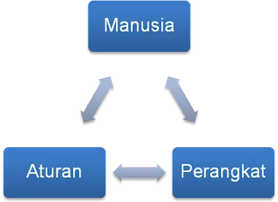
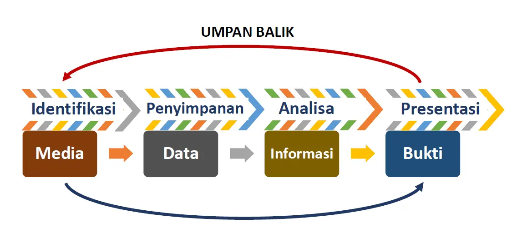

By : Me .12 Des, 2024
Materi yang akan dibahas saat ini merupakan materi terakhir dalam mata kuliah etika profesi. Topiknya tentang IT Forensic (Forensik Teknologi Informasi) yang bertujuan agar mahasiswa dapat memahami dan mendeskripsikan tools yang digunakanuntuk forensik teknologi informasi atau forensik digital. Dosen yang menyampaikan materi ini adalah Prof. Drs. SLAMIN, M.Comp.Sc., Ph.D secara daring diluar Universitas Jember. Simak kelanjutannya di bawah sini.
Forensik Komputer
Forensik sendiri adalah suatu proses ilmiah dalam mengumpulkan, menganalisa, dan menghadirkan berbagai bukti dalam sidang pengadilan terkait adanya suatu kasus hukum. Sehingga Forensik Komputer dapat diartikan sebagai suatu proses mengidentifikasi, memelihara, menganalisa dan menggunakan bukti digital menurut hukum yang berlaku. Istilah ini kemudian meluas menjadi Forensik Teknologi Informasi.
Forensik Teknologi Komputer
Forensik Teknologi Informasi adalah disiplin yang menggabungkan Ilmu Hukum dan Ilmu Komputer untuk menganalisis bukti digital. Dalam mengumpulkan dan analisa data diambil dari sumber daya komputer yaitu:
- Sistem Komputer
- Jaringan Komputer
- Jalur Komunikasi
- Media Penyimpanan
- Aplikasi Komputer
Tujuan
Ada dua tujuan utama dari Forensik Ilmu Komputer:
- Mendapatkan fakta-fakta obyektif dari sebuah insiden / pelanggaran keamanan sistem informasi.
- Fakta-fakta tersebut setelah diverifikasi akan menjadi bukti-bukti (evidence) yang akan digunakan dalam proses hukum.
Komponen

Konsep
Konsep dari IT Forensic dapat di gambarkan seperti diagram berikut: 
Empat elemen kunci forensik dalam teknologi komputer
- Identifikasi dari Bukti Digital Tahapan paling awal forensik dalam teknologi informasi. Tahapan ini melakukan identifikasi dimana bukti itu berada, disimpan, dan bagaimana penyimpanannya untuk mempermudah tahapan selanjutnya.
- Penyimpanan Bukti Digital Penyimpanan ini lebih menekankan bahwa bukti digital pada saat ditemukan akan tetap tidak berubah baik bentuk, isi, makna, dan sebagainya dalam jangka waktu yang lama. Ini adalah konsep ideal dalam dari penyimpanan bukti digital.
- Analisa Bukti Digital Pengambilan, pemrosesan, dan interpretasi dari bukti digital adalah bagian dari analisa bukti digital yang sangat penting.
- Presentasi Bukti Digital Proses persidangan dimana bukti digital akan diuji otentifikasi dan korelasi dengan kasus yang ada.
Identifikasi
Pada tahap ini segala bukti-bukti yang mendukung penyelidikan dikumpulkan. Penyelidikan dimulai dari identifikasi dimana bukti itu berada, dimana disimpan, dan bagaimana penyimpanannya untuk mempermudah penyelidikan. Penelusuran bisa dilakukan untuk sekedar mencari "ada informasi apa disini?“ sampai serinci pada "apa urutan peristiwa yang menyebabkan terjadinya situasi terkini?“
Tools yang digunakan untuk tahap ini, seperti Forensic Acquisition, UtilitiesFtimes dan ProDiscover DFT.
Penyimpanan
- Tahapan ini mencakup penyimpanan dan penyiapan bukti-bukti yang ada, termasuk melindungi bukti-bukti dari kerusakan, perubahan dan penghilangan oleh pihak-pihak tertentu.
- Karena bukti digital bersifat sementara (volatile), mudah rusak, berubah dan hilang, maka pengetahuan yang mendalam dari seorang ahli digital forensik mutlak diperlukan.
- Kesalahan kecil pada penanganan bukti digital dapat membuat barang bukti digital tidak diakui di pengadilan.
- Bahkan menghidupkan dan mematikan komputer dengan tidak hati-hati bisa saja merusak atau merubah barang bukti tersebut.
- Aturan utama pada tahap ini adalah penyelidikan tidak boleh dilakukan langsung pada bukti asli karena dikhawatirkan akan dapat merubah isi dan struktur yang ada didalamnya.
- Dilakukan copy data secara Bitstream Image dari bukti asli ke media lainnya. Bitstream image adalah metode penyimpanan digital dengan mengkopi setiap bit demi bit dari data orisinil, termasuk file yang tersembunyi, file temporer, file yang terdefrag, dan file yang belum tertimpa.
- Setiap biner digit demi digit di-copy secara utuh dalam media baru. Teknik ini umumnya diistilahkan dengan cloning atau imaging. Data hasil cloning inilah yang selanjutnya menjadi objek penelitian dan penyelidikan.
Analisa Bukti Digital
Tahapan ini dilaksanakan dengan melakukan analisa secara mendalam terhadap buktibukti yang ada. Bukti yang telah didapatkan perlu di telusuri kembali kedalam sejumlah skenario yang berhubungan dengan tindak pengusutan, seperti:
- Siapa yang telah melakukan
- Apa yang telah dilakukan
- Apa saja software yang digunakan
- Hasil proses apa yang dihasilkan
- Waktu melakukan
Tahapan analisis terbagi dua, yaitu: analisis media (media analysis) dan analisis aplikasi (application analysis) pada barang bukti yang ada. Beberapa tools analisis media yang bisa digunakan, seperti TestDisk, Explore2fs dan ProDiscover DFT. Sedangkan untuk analisis apliakasi, beberapa tools yang bisa digunakan, seperti Event Log Parser, Galleta dan Md5deep.
Presentasi
Presentasi dilakukan dengan menyajikan dan menguraikan secara detail laporan penyelidikan dengan bukti-bukti yang sudah dianalisa secara mendalam dan dapat dipertanggung jawabkan secara hukum di pengadilan. Laporan yang disajikan harus di cross-check langsung dengan saksi yang ada, baik saksi yang terlibat langsung maupun tidak langsung. Beberapa hal penting yang perlu dicantumkan pada saat presentasi/panyajian laporan ini, antara lain:
- Tanggal dan waktu terjadinya pelanggaran
- Tanggal dan waktu pada saat investigasi
- Permasalahan yang terjadi
Beberapa hal yang harus diperhatikan juga yaitu:
- Masa berlaku analisa laporan
- Penemuan bukti yang berharga (pada laporan akhir penemuan ini sangat ditekankan sebagai bukti penting proses penyidikan)
- Teknik khusus yang digunakan, contoh: password cracker
- Bantuan pihak lain (pihak ketiga)
Training dan Sertifikasi
- CISSP (Certified Information System Security Professional)
- CFA (Certified Forensics Analyst)
- ECFE (Experienced Computer Forensic Examiner)
- CCE (Certified Computer Examiner)
- CHFI (Computer Hacking Forensic Investigator)
- AIS (Advanced Information Security)